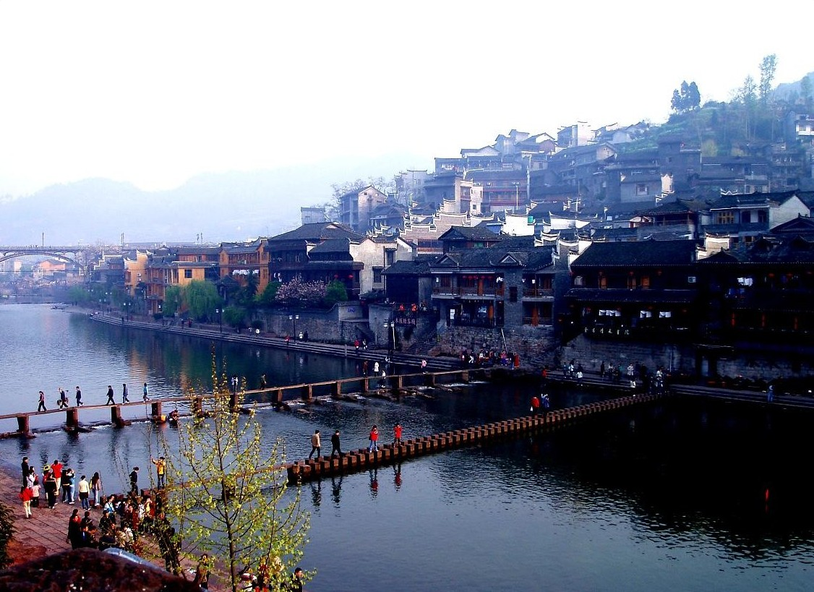
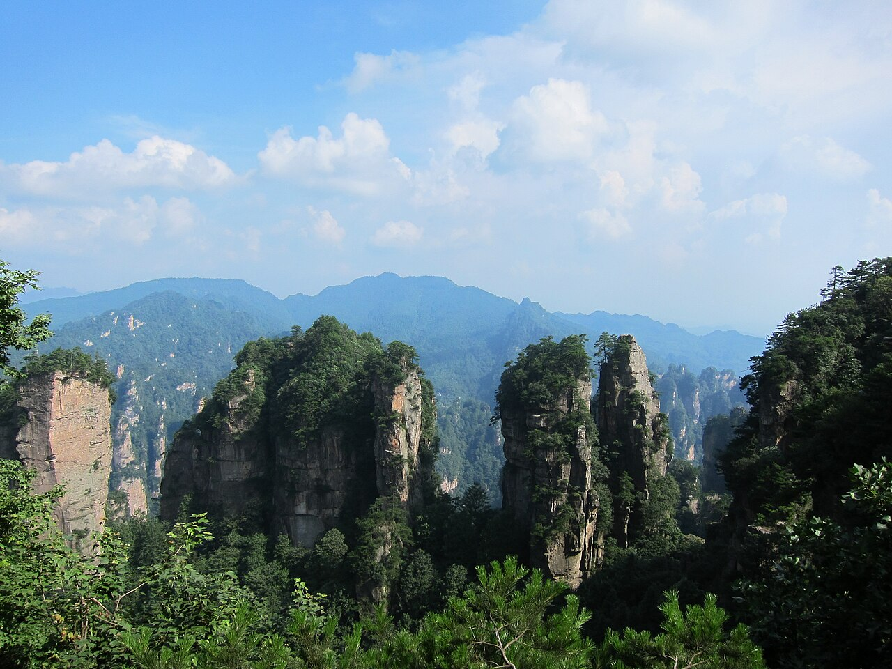
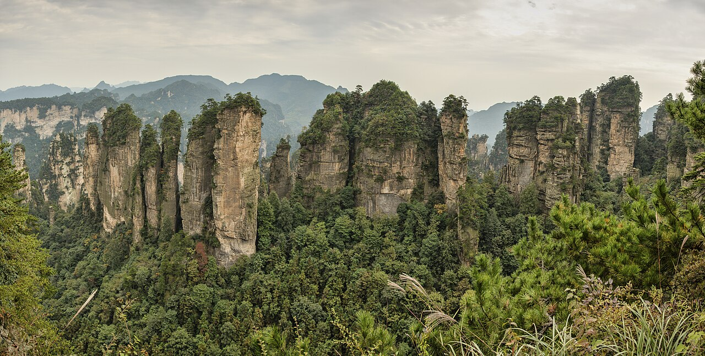

张家界以石英砂岩峰林地貌闻名，武陵源、天门山、大峡谷玻璃桥构成经典三角。自驾可灵活安排景区入口，但核心景点多需换乘景区交通，私家车停外围停车场。
3–5 日建议：Day1 天门山（索道/公路）— Day2–3 武陵源（袁家界、天子山、金鞭溪）— Day4 大峡谷玻璃桥（可选）— Day5 返程或延伸凤凰古城。峰林在雨后初晴最易见云海，但山路湿滑需谨慎。
4–10 月适宜，国庆黄金周极度拥挤。张家界市区与武陵源镇双基地住宿，景区间有公交但自驾更灵活。湖南菜偏辣，备肠胃药。
Itinerary
分日行程
抵达 → 天门山
天门山索道或通天大道公路上山，玻璃栈道、天门洞、鬼谷栈道串联。山顶停留 4–6 小时，下山后市区休整。
武陵源 → 袁家界 → 天子山
从森林公园门进，百龙天梯上袁家界，看哈利路亚山原型。天子山观景台俯瞰峰林，傍晚宿武陵源。
金鞭溪 → 十里画廊
金鞭溪平路徒步，溪水与峰林相伴。十里画廊可乘小火车，三姐妹峰等象形石生动。
大峡谷玻璃桥（可选）
世界最高玻璃桥之一，需提前预约时段。恐高者慎选。下午返市区或前往凤凰（另 3 小时）。
张家界 → 凤凰古城（可选延伸）
若时间允许，可驱车至凤凰古城，沱江吊脚楼与虹桥夜景是湘西名片。凤凰古城内停车不便，建议住城外步行入城。
Photo Essay
沿途影像





Highlights
核心景点
袁家界
电影《阿凡达》悬浮山灵感来源，迷魂台、天下第一桥是核心观景点。需乘百龙天梯或步道上山。
天子山
俯瞰峰林最佳位置之一，御笔峰、仙女献花等象形石林立。云海季节如仙境，雨后概率高。
天门山
天门洞天然穿山，999 级台阶或索道可达。玻璃栈道贴崖而行，恐高者需心理准备。
金鞭溪
平路溪谷徒步线，7.5 公里精华段适合全家。猴群可能出现，勿随意喂食。
大峡谷玻璃桥
横跨峡谷的透明桥面，垂直落差数百米。需预约并穿鞋套，旺季限流严格。
Route
途经站点
天门山门户
索道下站通常在市区。
核心景区
袁家界、天子山入口。
金鞭溪
东门进可徒步金鞭溪。
玻璃桥
需预约时段。
Practical
实用信息
- 武陵源门票多日有效，注意指纹录入与有效期。
- 雨天石阶湿滑，穿防滑鞋，勿靠近无护栏崖边。
- 野猴可能抢食，塑料袋勿外露，勿挑逗。
- 旺季百龙天梯、索道排队长，早出发或反向游览。
- 湖南山区多雾，备除雾剂或擦拭布保证车窗清晰。
EV Tips
新能源出行提示
驾驶腾势 N7 等纯电 SUV 出发前，请特别注意以下事项：
- 张家界市区、武陵源有快充，景区内仅停车换乘，出发前满电。
- 若延伸凤凰古城，吉首、凤凰补能点可规划。
- 山区爬坡能耗高，下山回收电量但勿过度依赖单踏板。